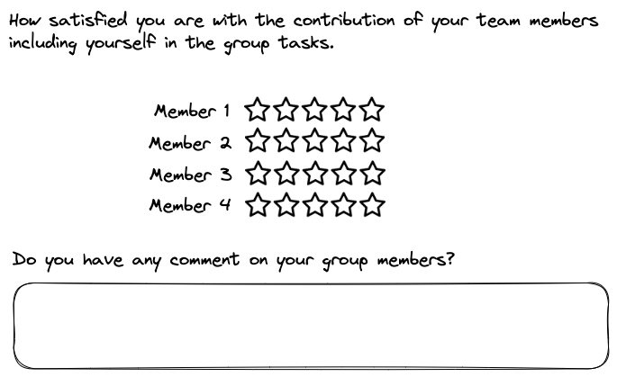

| Item | Project Deliverable | Tentative Due Date | Materials/Actions |
|---|---|---|---|
| 1 | Final Project Report | End of semester | Word/PDF Document |
| 2 | Final Project Presentation | Last Day of the Class | Oral Presentation & Slides (ppt or pdf) |
| 3 | Progress Document | Mid-semester | Slides (ppt or pdf) & Oral Presentation |
| 4 | Peer Evaluation | Before final project presentation | Fill out an online or paper survey |
3 Deliverables
Industry project is a semester-long assessment task. There are four primary deliverables in this project that instructor will use to assess your performance and to grade. These deliverables are final project report, final project presentation, progress document, and peer evaluation.
3.1 Final Project Report
Final project report is a key deliverable of industry project. Each group comes up with this report. It is a professional document that contains all the relevant details on proposed business solutions by the group to address the client’s business problems assigned in the project brief.
A project report is written as a marketing plan consisting of 5000-8000 words.
This is a minimum requirement for the report to be professional. In case groups exceed the minimum word limit; they will not be penalized.
There is no enforced rule on the structure of the project report. Groups can follow a structure based on the project requirement. Groups can follow a guideline of report structure described in Chapter 6.
Here is a sample project report.
3.2 Final Project Presentation
Final project presentation is another key deliverable of an industry project. It has two components: oral presentation and written presentation slides.
Each group will orally present findings, insights, and strategies from its report in the class using presentation slides. It is expected that each member from the group participate in oral presentation. Depending on total number of groups and class duration, each group will get 15-20 minutes for oral presentation. Group’s oral presentation will be followed by a general comment from the industry partner.
Here is a sample oral presentation.
Each group will submit their written presentation slides used for the oral presentation. Given the limited time for oral presentation, it is advised that the presentation should have 10-15 slides. These slides should capture the main insights from the report that directly relate to the business solutions that the group has come up with to address the client’s business problem.
Here is a sample written presentation slides.
Refer to Chapter 7 for a general guideline on final project presentation.
3.3 Progress Document
The only required progress document is presentation slides for the feedback session. Groups will update on progress during the feedback session by submitting their presentation slides a few days before the session. Then, during the session, groups will orally present the general direction that they plan to take to solve the client’s business problem.
It is advised that the presentation for the feedback session should be limited to 5-10 slides.
Here is a sample presentation slide deck for the feedback session.
Failure to attend feedback session
If a group does not attend the feedback session, the instructor will ask for additional materials to ensure that the group has been continuously working on the project.
The instructor’s demand for such materials will depend on her assessment of how much progress the group has made in the project and group members’ interaction with the client, instructor, and among themselves.
Therefore, do not fail to show up for the feedback session.
3.4 Peer Evaluation
There ain’t no such thing as a free lunch
Industry project is a group-based activity. It is expected that each member in the group contributes towards various deliverables of the project. Given that the project is semester-long during which some activities take place in class while others happen out of the class, instructor will usually conduct a peer evaluation survey to measure the contribution of each member towards the group project.
A peer evaluation survey is a simple questionnaire with only two questions. The first question asks each member to rate (e.g., a star rating on a scale of 1-5) all members of her group (including herself). The second question captures a qualitative assessment of group members’ performance in the project.

Completing the peer evaluation survey is mandatory.
3.5 Summary
Table 3.1 summarizes the list of deliverables with tentanive dates and requires actions or materials.